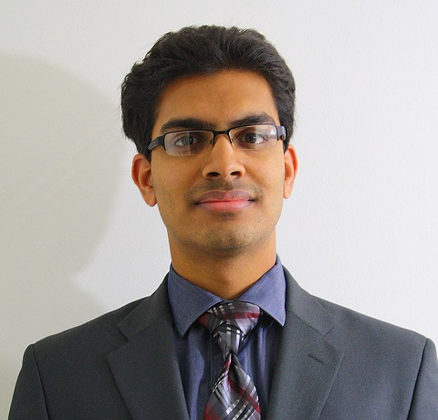
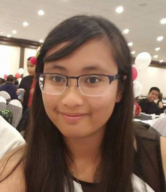

Aditya Koppula
PRESIDENT
Aditya is a 3rd year Computer Science major who's interested in robotics, artificial intelligence, virtual reality, web development, and video games. In his free time, Aditya enjoys reading, playing video games including League of Legends , and spending time with his friends.
Aditya joined IEEE in his freshman year after attending an Arduino workshop organized by IEEE. He quickly became a vocal member of the IEEE UCI community, and landed a position as webmaster for his second year before becoming president this year.
In the coming years, Aditya aims to expand IEEE UCI's member base and activities, to better serve the needs of the Engineering and CS communities at UCI and increase the reach and reputation of IEEE UCI.
Ho-Ren Kang
EXTERNAL VICE PRESIDENT
Ho-Ren is a Junior studying Computer Science at UCI and formerly at UCR. He enjoys learning about cybersecurity, playing with old and new hardware, and developing mobile applications.
Ho-Ren joined IEEE’s UCR branch freshman year and became an active member of the IEEE UAV team until he transferred schools.
After witnessing the amazing activities, infrastructure, and community, Ho-Ren plans to bring similar aspects and results to IEEE@UCI.
Ian May
LAB COORDINATOR
Ian May is a fourth year Electrical Engineering major. He joined IEEE in his second year and was eager to contribute to its cooperative environment and awesome technical culture. A hobby coder and tinker by nature, you can find him by the soldering station in the lab room or staring at lines of code.
Daniel Ring
WEBMASTER
Daniel Ring is a graduating 3rd-year Senior studying Computer Engineering at UCI. He enjoys software development, system administration, and video gaming in his free time.
He is always working on a variety of projects; his current tasks are packaging a webmail application for inclusion in the Debian software repository and configuring a HPC cluster in the IEEE lab.

Prima Donna Abrantes
GRAPHIC DESIGNER
Prima is currently a 2nd-year majoring in Biomedical Engineering - Premed. Her interests run far and wide, from professional bowling to cooking & baking. She also enjoys digital design, video games, eating, cinematography, and photography.
She joined the club in her freshman year and has since gained an interest in learning coding languages such as Java and C++.
Justin Lee
LAB MANAGER
I am a salad enthusiast.
Other than that, I love hardware architecture, as well as C++. I enjoy making Hackintoshes out of Thinkpads, and I have a non-exclusive love/hate relationship for bugs.
"We choose to go to the moon in this decade and do the other things (accomplishments and aspirations), not because they are easy, but because they are hard, because that goal will serve to organize and measure the best of our energies and skills, because that challenge is one that we are willing to accept, one we are unwilling to postpone, and one which we intend to win." -- JFK